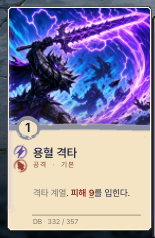
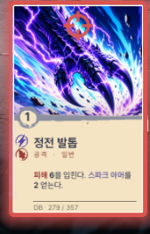
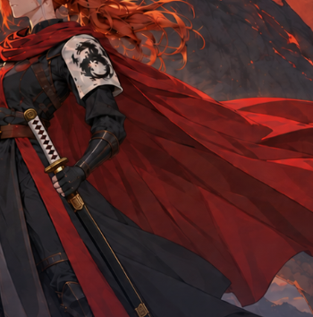
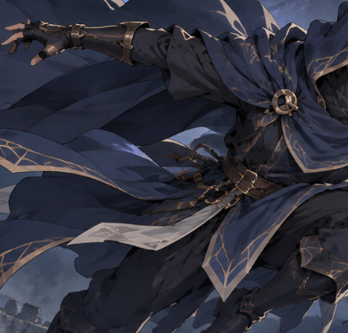
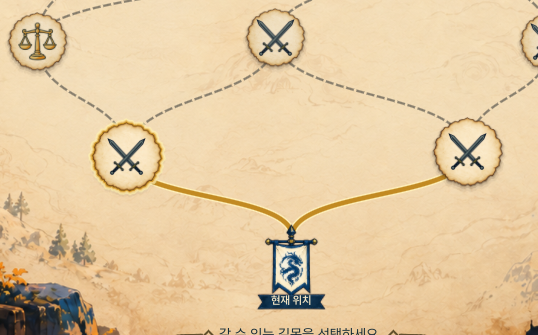
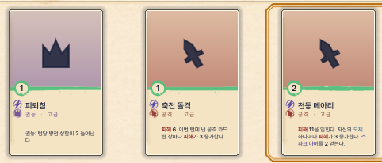
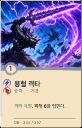
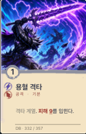
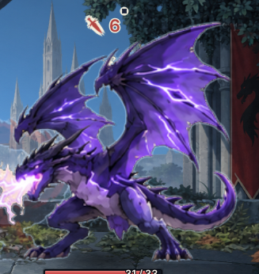

DRAGONBLOODDECK / CHOICE / SYNERGY
개발 중 화면
실제 게임 플레이 · 전체 화면 비율 유지
아래: 실제 화면 확대
30 SECONDS / FIRST IMPRESSION개발 중 · 영상용 사운드
01 / 결정의 순간
이 한 장,
지금 쓸까?

한 장의 선택이
다음 수를 바꾼다.
원본 UI 확대02 / 카드와 대상
카드를 고르고,
목표를 찍는다.

비용과 효과를 보고
직접 대상을 조준.
원본 UI 확대03 / 가문의 선택
불꽃으로 갈까,
번개로 갈까?

하우스 파이렌
불꽃의 계승자
실제 게임 화면 확대04 / 가문의 선택
불꽃으로 갈까,
번개로 갈까?

하우스 볼그림
번개의 계승자
실제 게임 화면 확대05 / 분기 맵
갈 길도,
받을 카드도.

갈림길 앞에서
다음 경로를 고른다.
원본 UI 확대06 / 카드 보상
갈 길도,
받을 카드도.

보상 카드 3장 중
나의 덱에 한 장.
원본 UI 확대07 / 이어지는 선택
막는 순서가,
때리는 힘이 된다.
사용 전소풍 사용 후


08 / YOUR NEXT DECK
이 덱빌딩,
해보고 싶어?

DRAGONBLOOD
로그라이크 덱빌딩
실제 게임 화면 확대